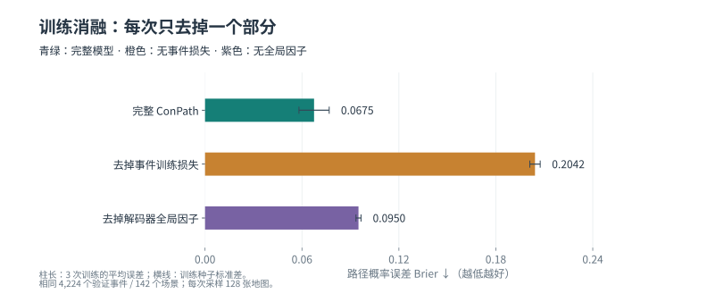
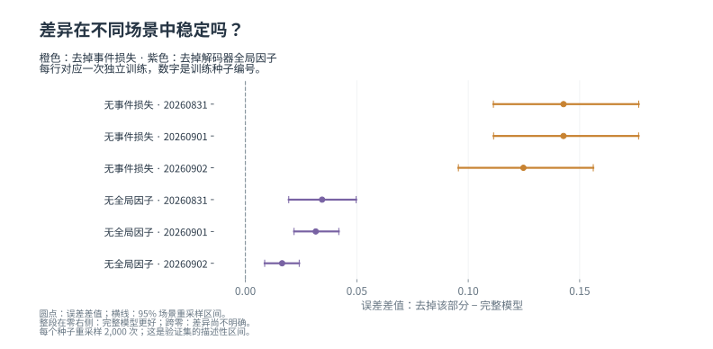

{kind=link}
去掉事件训练损失
三次训练的区间均高于零，支持完整模型在此验证设置下更好。
部分观测 · 地图不确定性 · 路径概率
机器人只看到了地图的一部分。我们让模型补全多种可能的世界，
再考虑机器人的尺寸，估计起点到目标之间存在通路的概率。
验证阶段 · 六组消融完成 · 外部模型接口已接通 · 更新于 2026.09.08
01 / 方法
下面是已训练模型的真实验证示例。按 ① → ④ 阅读；每张图都可以放大。
概率图单独使用图内的 0–1 色条，颜色越深，单元格越可能可通行。S 和 G 只是查询的两个端点，图中没有把它们画成一条规划路线。
把可能的完整地图逐一检查后，模型给出“有路”的概率。中间的均值概率图描述每个位置，最终通路概率还取决于这些位置能否共同连通。
FlatLands / ZInD · obs_266762 · 机器人半径 10 格 · 模型种子 20260831。按验证标签挑选的解释性示例，不能用两个例子代替整体统计。
概率地图为每一个格子给出可通行概率，例如 70%。一次随机补全则把整张地图变成一个具体世界：每格要么可通行，要么阻挡。两张概率地图即使看起来接近，也可能产生连通性很不一样的完整世界。
为考虑机器人的大小，我们先从可通行区域边缘扣除一个圆盘半径，再用四邻接关系检查起点和目标是否连通。这里评估的是通路是否存在，尚未输出带车辆动力学约束的行驶轨迹。
02 / 数据
6 个室内地图示例、6 个户外场景，以及一段 18 帧的真实数据浏览。
新增图库均取自训练集，场景按来源和编号选取，没有按模型表现挑图。
左边是模型能够看到的部分，右边是用于核对的完整参考地图。这些是俯视栅格图，不是相机照片。
训练集 · 3RScan / c6707946-2ecb-2de2-8381-d5eae12243ee · obs_000468 · 每格 0.01 米。模型输入与完整参考严格区分。
这是一段 UnScenes3D 原始数据的逐帧浏览。照片是前视图，地图是俯视图；当前模型读取激光雷达生成的观测地图，参考地图用于监督和评估。
每秒切换一张采样帧，仅用于看数据，并非原始录像速度或模型实时运行速度。没有绘制查询直线或预测行驶路线。
03 / 结果
当前主要证据来自 FlatLands：142 个验证场景，每次训练评估相同的 4,224 个路径事件。
场景之间等权，正式测试集尚未评估。
ConPath 比独立单元对照低约 29.1%。
同模型的均值地图已很接近 ConPath。
配对区间包含零，尚无稳定风险优势。

| 方法 / 对照 | 种子数 | Brier ↓ | NLL ↓ | ECE ↓ | 30% 覆盖率误判 ↓ |
|---|---|---|---|---|---|
| ConPath（相关补全） | 3 | 0.06749 ± 0.00936 | 0.28854 ± 0.01662 | 0.05715 ± 0.00683 | 3.60% |
| 独立单元对照 | 3 | 0.09521 ± 0.00703 | 0.78503 ± 0.04690 | 0.08720 ± 0.00741 | 3.90% |
| 确定性地图补全 | 3 | 0.08857 ± 0.00323 | 1.22362 ± 0.04463 | 0.08857 ± 0.00323 | 7.29% |
| 坐标查询对照 | 3 | 0.09204 ± 0.00582 | 0.33411 ± 0.01859 | 0.04302 ± 0.00803 | 6.97% |
| 直接预测对照（单种子） | 1 | 0.09119 | 0.29788 | 0.04076 | 5.02% |
| 训练集半径先验 | 1 | 0.15870 | 0.49283 | 0.01661 | 11.16% |
| ConPath 均值地图 | 3 | 0.06957 ± 0.00380 | 0.96118 ± 0.05253 | 0.06957 ± 0.00380 | 10.51% |
| 独立对照均值地图 | 3 | 0.07184 ± 0.00349 | 0.99248 ± 0.04822 | 0.07184 ± 0.00349 | 11.02% |
| 打散空间结构（评估干预） | 3 | 0.16139 ± 0.00677 | 1.53947 ± 0.18205 | 0.16433 ± 0.01252 | 3.91% |
Brier：概率的平方误差。NLL：对错误且过度自信的判断惩罚更重。ECE：模型信心与实际频率的分箱差异。误判通路：接受的查询里，实际上没有通路的比例。种子数代表独立训练次数；半径先验只由训练集拟合一次。
均值地图等二元预测会出现同分查询，覆盖率边界按不使用标签的比例方式分配。原始统计 JSON ↗ · 完整证据与复现说明 ↗
新完成 / 六组训练消融
两种消融各独立训练三次，再与三个相同种子的完整模型配对。全部参数训练、精确评估和检查已完成；仍使用相同的验证集。

三次训练的区间均高于零，支持完整模型在此验证设置下更好。
三次训练的区间均高于零，支持完整模型在此验证设置下更好。
但相同 30% 覆盖率下，六个误判风险区间都包含零，尚不能宣称安全性稳定提升。
| 模型 | Brier ↓ | NLL ↓ | ECE ↓ | 30% 覆盖率误判 ↓ |
|---|---|---|---|---|
| 完整 ConPath | 0.06749 ± 0.00936 | 0.28854 ± 0.01662 | 0.05715 ± 0.00683 | 3.60 ± 0.99% |
| 去掉事件训练损失 | 0.20425 ± 0.00322 | 2.53067 ± 0.05699 | 0.21690 ± 0.01933 | 5.65 ± 0.58% |
| 去掉解码器全局因子 | 0.09499 ± 0.00157 | 0.78486 ± 0.05495 | 0.08592 ± 0.00058 | 4.29 ± 1.24% |

去掉事件训练损失仍保留相同的验证事件选模型规则。去掉全局因子仅关闭解码器的全局随机因子，编码器上下文和局部相关性仍在，因此不能解释为“所有空间相关性都被去掉”。
每个种子内按整个场景重采样 2,000 次；训练波动和场景区间分开报告。验证集曾用于检查点选择，这些区间用于描述当前证据，尚不能替代正式测试。
沿用此前固定的两个验证示例，未按本轮结果重新挑图。三组都展示种子 20260831；手机可左右滑动，点击图片放大。
每幅图使用相同的 0–1 色条。颜色都很绿，也不保证整条通路能同时容纳机器人；切换右侧视图查看一次实际采样。
该查询的原验证通路概率：完整 ConPath 78.9%；去掉事件训练损失 0.0%；去掉解码器全局因子 0.0%。
该查询的原验证通路概率：完整 ConPath 75.8%；去掉事件训练损失 0.0%；去掉解码器全局因子 74.2%。
图片来自真实检查点，以固定绘图种子采样 128 次、每批 8 张。“一次采样”固定展示第 1 张完整世界，经圆盘半径收缩后的机器人中心可放置区域，未按成败挑选。图中通路概率来自原精确验证 CSV，与绘图使用不同随机流；0% 表示 128 次中未采到有路，不是绝对不可能的证明。两个例子用于解释，不能代替整体统计。S 为起点、G 为目标，没有绘制规划路线。模型、图片与查询来源 ↗
04 / 研究选择
它直接提供部分观测、完整俯视地面地图和有效范围，适合构造“这两个点之间，对指定尺寸的机器人是否有路”的标签。选它首先是因为与研究问题匹配。
当前使用场景隔离的自建来源划分，不是官方排行榜划分。本地输入是地图通道，没有声称复现原论文从单张 RGB 图像出发的完整系统。官方介绍 ↗
它提供真实车辆相机、激光雷达和三维占用标注，可检查从室内地图换到户外观测时，方法哪里会失效。标注可投影为保守的可通行地面图。
目前使用公开 mini 数据中的 9 个训练场景、2 个验证场景，测试地点 location_6 未使用。它与常见的 nuScenes 是两个不同数据集。数据论文 ↗
已核查八篇论文的实验章节与相关官方代码。主实验优先比较地图补全方法，再用共同的通路判断评估；外部方法比较与消融都需要。正式外部主比较尚未运行；CogniPlan、LaMa和流匹配已完成接口检查和小规模测速，记录如下。
| 原论文 | 原论文的数据与比较方式 | 本项目的采用方式 |
|---|---|---|
| FlatLands · 2026 ↗ | 统一 BEV 输入；U-Net、LaMa/集成、扩散与流匹配 | 主实验优先增加 LaMa/集成和条件生成强对照；官方生成模型工具仍待发布。 |
| MapEx · ICRA 2025 ↗ | KTH 楼层图；比较 Nearest、UPEN、IG-Hector | 使用公开 LaMa 补全代码；补全模块的比较不等于完整探索系统比较。 |
| CogniPlan · CoRL 2025 ↗ | 模拟地图及 KTH；分别评估探索与导航 | 优先在其原生地图上比较官方生成模块，保留原有布局条件。 |
| PaSCo · CVPR 2024 ↗ | SemanticKITTI、SSCBench-KITTI360 | 借鉴集成不确定性思路；旧集成对照尚未形成当前修正协议下的最终基线。 |
| S4C · 3DV 2024 ↗ | KITTI-360；在 SSCBench-KITTI360 上评估 | 本地坐标查询对照借鉴其隐式查询思路，并非原版三维系统。 |
| SGN · TIP 2024 ↗ | SemanticKITTI、SSCBench-KITTI360；另有 NYUv2 | 相关工作参考；尚未在本项目相同输入和任务上运行。 |
| 在线 SceneSense · 2024 ↗ | 作者采集的真实建筑占用地图 | 三维占用生成与探索任务；不能直接把其分数放进路径概率表。 |
外部对比准备 · 2026.09.08
已在32个固定训练观测上生成128张地图，与官方后处理逐张一致，已观测区域零冲突。重建和对抗阶段各完成100次更新测速，未启动正式长训练。
这些是原训练数据上的接口检查，不是留出验证成绩。公开权重见过原训练地图；公平主表将按新的共同划分重新训练。四个输出来自预设条件，未用真实布局选取。以下每类首例在看结果前已经固定，输出不准确的部分也保留。
新划分：2,400张母地图用于训练、300张校准、300张验证；旋转和镜像后的重复几何也检查过。初步测速外推，原版50万步约需12.4小时/次，三次串行约37.3小时，另加完整数据读取、评估与存档时间。当前有其他GPU负载，此处只用于估算排期。
外部方法接入 · 2026.09.08
保留LaMa的官方Fourier骨干，流匹配按论文方程重实现；两者均完成100次有效批量64的更新测速。所有模型接收相同观测与有效范围，输出恢复已观测区域并封闭范围外。
| 方法 | 生成器参数量 | 每次输出 | 批量64每次更新 | 训练峰值显存 |
|---|---|---|---|---|
| LaMa：Fourier卷积补全 | 50.97 百万 | 1张 | 1.35秒 | 11.81 GiB |
| 条件流匹配＋交叉注意力 | 21.20 百万 | 4张 | 3.42秒 | 5.31 GiB |
当前GPU存在其他任务，这张表用于排期。更新次数不等于轮数；梯度累积、原始耗时和输入传输范围见中文记录。LaMa这一行只跑了单模型，四成员集成尚未训练。流匹配用25步Heun生成四张图，实测50次批量前向，计入条件引导相当于400次单图前向。
以下是固定训练样本上的接口检查，模型尚未收敛。观测、模型输出、完整参考分别标注；错误和不合理的补全也保留。没有把这些短训练分数放入正式对比表。
图片来自首轮小批量短训练；以下曲线来自另一次有效批量64的测速。32个训练观测被反复使用，损失下降不证明验证有效，也不能据此判断哪个方法更好。
下载训练曲线：LaMa PDF ↗ · 流匹配 PDF ↗
当前方案：FlatLands 做主比较，CogniPlan 原生地图补充外部生成模块比较，KTH 作为后续泛化补充。KITTI-360 暂不列为必跑。先核对数据尺度、原生实现和计算预算，再安排训练；所有方法统一起终点、机器人尺寸与评价规则，实验数值由实际运行产生。
第一张新表计划统一为 4 个完整地图输出，比较 ConPath、LaMa 集成、条件流匹配等；确定性方法保留单个输出。另一张表记录实际采样量、误差、耗时和显存。现有 128 次采样的数值不会直接混进这张新表。
实验方案已确认：补齐外部方法对比、三次独立训练、场景配对统计和失败案例，再写入论文。已知限制也会保留：均值地图结果很接近，正式外部主比较尚未运行。FlatLands 的160份训练元数据均描述裁剪，但论文另有缩放描述；物理尺度仍未独立验证，半径继续按格报告。六组内部训练消融及配对统计已完成，结果见上方新表。接下来补齐外部方法主比较；内部消融不能代替这些对比实验。
本轮六组参数训练与精确评估均已完成。中文汇总包含三次训练结果、场景配对区间和按来源/半径的分层表现，图表与论文同步更新。
论文仍是工作草稿；已确认的后续工作包括外部方法主对比、CogniPlan 原生地图实验、计算成本和统计分析。当前页面分别展示已完成的验证结果和 CogniPlan 训练数据接口检查；LaMa与流匹配已完成接入和测速，下一项是统一正式数据规模、查询规则与收敛诊断。
交互数据暂时加载失败；已展示首个示例与完整静态结果，请刷新重试。
{kind=link}
{kind=link}
{kind=link}
{kind=link}
{kind=link}
{kind=link}
{kind=link}
{kind=link}
{kind=link}
{kind=link}
{kind=link}
{kind=link}
{kind=link}
{kind=link}
{kind=link}
{kind=link}
{kind=link}
{kind=link}
{kind=link}
{kind=link}
{kind=link}
{kind=link}
{kind=link}
{kind=link}
{kind=link}
{kind=link}
{kind=link}
{kind=link}
{kind=link}
{kind=link}
{kind=link}
{kind=link}
{kind=link}
{kind=link}
{kind=link}
{kind=link}
{kind=link}
{kind=link}
{kind=link}
{kind=link}
{kind=link}
{kind=link}
{kind=link}
{kind=link}
{kind=link}
{kind=link}
{kind=link}
{kind=link}